Bestiario
Las 311 criaturas del juego: fauna, monstruos, facciones, jefes y enemigos únicos. La vida y el daño son los valores base del archivo de datos; en el mundo cada criatura aparece con el nivel de peligro de la zona y puede salir como veterana, élite, campeona o legendaria.
| Nombre | Tipo | Carácter | Nivel | Vida | Daño | Doma | Biomas | |
|---|---|---|---|---|---|---|---|---|
 | Abeja | Fauna | Pacífico | 1 | 10 | 2 | Llanura, Bosque, Sabana, Selva | |
 | Abzu el Devorador de Corrientes | Único | Hostil | 360 | 286 | 7,89 | Fosa Abisal | |
 | Aethelgard el Dragón Cósmico del Éter | Jefe | Hostil | 485 | 660,9 | 7,92 | ||
 | Alce | Fauna | Defensivo | 1 | 68 | 10,8 | Montura | Bosque, Pantano, Tierras nevadas |
 | Alce Corniplata | Fauna | Defensivo | 1 | 133 | 13,9 | Montura | Tierras nevadas, Estepa Ventosa |
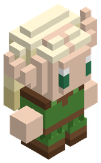 | Aldeana elfa | Aldeano | Pacífico | 1 | 40 | 2 | ||
 | Aldeana sylva | Aldeano | Pacífico | 1 | 40 | 2 | ||
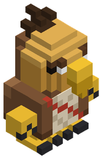 | Aldeano avian | Aldeano | Pacífico | 1 | 40 | 2 | ||
 | Aldeano enano | Aldeano | Pacífico | 1 | 40 | 2 | ||
 | Aldeano frogman | Aldeano | Pacífico | 1 | 40 | 2 | ||
 | Aldeano humano | Aldeano | Pacífico | 1 | 40 | 2 | ||
 | Anguila Eléctrica Titánica | Fauna | Hostil | 1 | 12 | 5,4 | Río, Pantano | |
 | Ankhor el Corazón del Manto | Jefe | Hostil | 480 | 699,4 | 7,91 | ||
 | Araña Tejedora Gigante | Fauna | Hostil | 1 | 71 | 11 | Taiga de Pinos, Cañón de Arcilla, Bosque de Bambú Ancestral, Estepa Ventosa… | |
 | Ardilla | Fauna | Pacífico | 1 | 11 | 2 | Bosque | |
 | Armadillo de Placas Metálicas | Fauna | Pacífico | 1 | 16 | 2 | Cañón de Arcilla | |
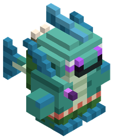 | Arponero tritón | Facción | Hostil | 4 | 35 | 7,9 | ||
 | Arquero esquelético | Facción | Hostil | 1 | 24 | 4,5 | ||
 | Arquero Óseo de Tiro Rápido | Fauna | Hostil | 1 | 29 | 7,9 | Taiga de Pinos, Cañón de Arcilla, Bosque de Bambú Ancestral, Estepa Ventosa… | |
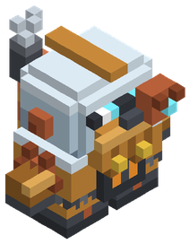 | Autómata ballestero | Facción | Hostil | 4 | 48 | 8,2 | ||
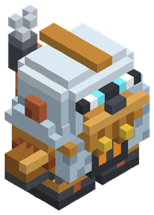 | Autómata baluarte | Facción | Hostil | 4 | 96 | 7,7 | ||
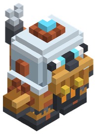 | Autómata de cristal | Facción | Hostil | 4 | 45 | 9,4 | ||
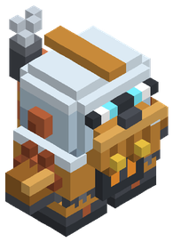 | Autómata llave | Facción | Hostil | 4 | 72 | 9,9 | ||
 | Avestruz | Fauna | Defensivo | 1 | 49 | 9,6 | Montura | Sabana, Desierto |
 | Bakunawa la Serpiente Lunar | Único | Hostil | 88 | 113,1 | 7,58 | Selva de Manglares | |
 | Ballestero de sangre | Facción | Hostil | 6 | 32 | 9 | ||
| Ballestero explorador | Facción | Defensivo | 3 | 32 | 7,5 | |||
 | Bandido acorazado | Facción | Hostil | 2 | 64 | 7 | ||
 | Bandido arquero | Facción | Hostil | 2 | 32 | 7,5 | ||
 | Bandido matón | Facción | Hostil | 2 | 48 | 9 | ||
 | Basilisco Escamarrápida | Fauna | Hostil | 1 | 71 | 11 | Montura | Desierto |
 | Basilisco de Terracota | Único | Hostil | 42 | 70,1 | 6,54 | Cañón de Arcilla | |
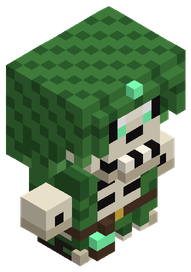 | Bruja de las mareas | Facción | Hostil | 4 | 27 | 9,4 | ||
 | Brujo bandido | Facción | Hostil | 2 | 30 | 8,5 | ||
 | Buey almizclero | Fauna | Defensivo | 1 | 57 | 10,2 | Tierras nevadas | |
 | Buitre leonado | Fauna | Pacífico | 1 | 13 | 2 | Sabana, Desierto | |
 | Bégimo de la Podredumbre | Único | Hostil | 32 | 75,4 | 7,03 | Pantano | |
 | Búho Sabio Astral | Fauna | Pacífico | 1 | 26 | 2 | Bosque Celestial | |
 | Búho real | Fauna | Pacífico | 1 | 12 | 2 | Bosque, Tierras nevadas | |
 | Caballero Negro Desalmado | Fauna | Hostil | 1 | 91 | 12 | Bosque de Hongos Gigantes, Glaciares de Hielo Azul, Picos Volcánicos, Bosque Umbrío… | |
 | Caballito de Mar Guardián | Fauna | Defensivo | 1 | 24 | 7,4 | Océano | |
 | Caballo | Fauna | Pacífico | 1 | 44 | 2 | Montura | Llanura |
 | Caballo Espectral | Fauna | Hostil | 1 | 46 | 9,4 | Montura | Páramo de la Corrupción |
 | Cabecilla bandido | Facción | Hostil | 3 | 95 | 13 | ||
 | Cabra de Cuernos Espirales | Fauna | Defensivo | 1 | 21 | 6,9 | Montaña | |
 | Cabra montesa | Fauna | Pacífico | 1 | 20 | 2 | Montaña | |
 | Calamar Colosal de Ojo Dorado | Fauna | Hostil | 1 | 300 | 19,8 | Fosa Abisal | |
 | Camaleón Gigante de Copa | Fauna | Defensivo | 1 | 28 | 7,8 | Selva | |
 | Camello de Doble Joroba Nevado | Fauna | Pacífico | 1 | 73 | 2 | Tierras nevadas, Estepa Ventosa | |
 | Cangrejo | Fauna | Defensivo | 1 | 15 | 6 | Playa | |
 | Cangrejo Araña Gigante | Fauna | Defensivo | 1 | 114 | 13,1 | Playa, Fosa Abisal | |
 | Capataz kobold | Facción | Hostil | 3 | 76 | 11,7 | ||
 | Capibara | Fauna | Pacífico | 1 | 20 | 2 | Pantano, Río, Selva | |
 | Capitán Esquelético Torvald | Jefe | Hostil | 8 | 52,1 | 5 | ||
 | Capitán Fantasma Van Der Meer | Jefe | Hostil | 10 | 61,8 | 6,05 | ||
| Capitán de la Orden | Facción | Defensivo | 4 | 95 | 13 | |||
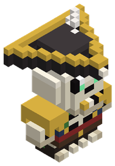 | Capitán no-muerto | Facción | Hostil | 5 | 86 | 14,3 | ||
 | Carillón el Guardián de las Campanas | Jefe | Hostil | 370 | 278,5 | 7,89 | ||
 | Castor | Fauna | Pacífico | 1 | 12 | 2 | Río, Pantano, Bosque | |
 | Cebra | Fauna | Pacífico | 1 | 33 | 2 | Montura | Sabana |
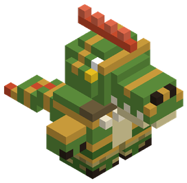 | Cerbatanero lagarto | Facción | Hostil | 3 | 35 | 7,9 | ||
 | Cerdaloth el Glotón | Único | Hostil | 8 | 36,1 | 4,1 | Llanura | |
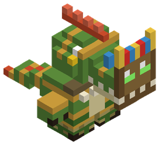 | Chamán del pantano | Facción | Hostil | 3 | 33 | 8,9 | ||
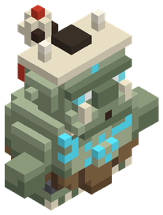 | Chamán ogro | Facción | Hostil | 5 | 72 | 14,4 | ||
 | Ciempiés de Caverna Titánico | Fauna | Hostil | 1 | 56 | 10,1 | Bosque de Hongos Gigantes, Glaciares de Hielo Azul, Picos Volcánicos, Bosque Umbrío… | |
 | Cieno Ácido de Cloaca | Fauna | Hostil | 1 | 34 | 8,4 | Pantano, Taiga de Pinos, Cañón de Arcilla | |
 | Ciervo | Fauna | Pacífico | 1 | 29 | 2 | Montura | Bosque, Llanura |
 | Ciervo Real Cornicastaño | Fauna | Defensivo | 1 | 46 | 9,4 | Montura | Pradera Floral, Arboleda de Otoño |
 | Ciervo Volador Esmeralda | Fauna | Hostil | 1 | 41 | 9 | Bosque de Bambú Ancestral | |
 | Ciervo de la Niebla | Fauna | Pacífico | 1 | 30 | 2 | Arboleda de Otoño | |
 | Cocodrilo | Fauna | Defensivo | 1 | 22 | 7,1 | Pantano, Río, Selva | |
 | Cocodrilo Emperador de los Pantanos | Fauna | Hostil | 1 | 61 | 10,4 | Ciénaga Tóxica | |
 | Coloso de Basalto Vulcanus | Jefe | Hostil | 170 | 189,4 | 7,77 | ||
 | Conejo | Fauna | Pacífico | 1 | 12 | 2 | Mascota | Llanura, Bosque, Tierras nevadas |
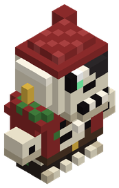 | Contramaestre ahogado | Facción | Hostil | 4 | 58 | 7,7 | ||
 | Cronos el Titán Olvidado | Único | Hostil | 470 | 584,1 | 7,91 | Valle de los Titanes | |
 | Cthulhu Menor de las Sombras | Jefe | Hostil | 190 | 217,1 | 7,79 | ||
 | Cuervo | Fauna | Pacífico | 1 | 10 | 2 | Llanura, Bosque, Pantano, Sabana | |
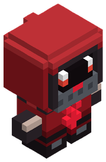 | Cultista sangriento | Facción | Hostil | 6 | 48 | 10,8 | ||
 | Cóndor de las Alturas | Fauna | Defensivo | 1 | 23 | 7,2 | Montaña | |
 | Delfín Manchado | Fauna | Pacífico | 1 | 17 | 2 | Océano | |
 | Devorador de Cadáveres | Fauna | Hostil | 1 | 24 | 7,4 | Taiga de Pinos, Cañón de Arcilla | |
 | Dingo Salvaje de las Dunas | Fauna | Defensivo | 1 | 16 | 6,1 | Desierto, Sabana | |
 | Djinn de Arena y Viento | Fauna | Defensivo | 1 | 58 | 10,2 | Desierto, Oasis Místico | |
 | Draco de Ceniza | Fauna | Hostil | 1 | 166 | 15,2 | Montura | Páramo de Ceniza |
 | [JEFE] Dragón de Obsidiana Milenario | Jefe | Hostil | 1 | 1800 | 56 | Núcleo Ígneo | |
 | Dromedario | Fauna | Defensivo | 1 | 52 | 9,8 | Montura | Desierto |
 | Dromedario de Carga | Fauna | Pacífico | 1 | 63 | 2 | Montura | Desierto |
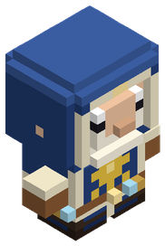 | Druida de la Orden | Facción | Defensivo | 3 | 30 | 8,5 | ||
 | Duende acuchillador | Facción | Hostil | 1 | 22 | 4 | ||
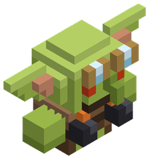 | Duende cerbatanero | Facción | Hostil | 1 | 18 | 3,5 | ||
 | El Behemoth Abisal de Magma y Vacío | Jefe | Hostil | 480 | 731,2 | 7,91 | ||
 | El Capataz Kobold Griknash | Jefe | Hostil | 10 | 54,5 | 6,05 | ||
 | El Demiurgo del Origen | Jefe | Hostil | 500 | 1069,2 | 7,92 | ||
 | El Forjador Mecánico de Mithril | Jefe | Hostil | 180 | 204 | 7,78 | ||
 | El Gólem del Origen Tectónico (Guardián de la Piedra Alfa) | Jefe | Hostil | 500 | 1160,8 | 7,92 | ||
 | [JEFE] El Heraldo del Borde del Mundo | Jefe | Hostil | 1 | 1800 | 56 | El Borde del Mundo | |
 | El Kraken del Génesis (La Mente del Océano Primordial) | Jefe | Hostil | 500 | 1191,3 | 7,92 | ||
 | El Leviatán Ciego del Abismo | Jefe | Hostil | 340 | 320,1 | 7,88 | ||
 | El Nigromante de Azufre Mor'Kath | Jefe | Hostil | 42 | 90,5 | 6 | ||
 | El Rey Enano de Hierro Autómata | Jefe | Hostil | 420 | 416,4 | 7,9 | ||
 | El Segador de Escarcha Estigia | Único | Hostil | 340 | 257,8 | 7,88 | Yermo Helado Estigio | |
 | Elefante | Fauna | Defensivo | 1 | 300 | 19,2 | Montura | Sabana |
 | Elemental de Hielo Escarchado | Fauna | Hostil | 1 | 79 | 11,4 | Glaciares de Hielo Azul | |
 | Elemental de Llama Viva | Fauna | Hostil | 1 | 46 | 9,3 | Picos Volcánicos | |
 | Elemental de Tormenta | Fauna | Hostil | 1 | 42 | 9,1 | Cumbres de la Tormenta Eterna | |
 | Ent Ancestral del Bosque | Fauna | Defensivo | 1 | 300 | 28 | Bosque Umbrío | |
 | Erizo | Fauna | Pacífico | 1 | 12 | 2 | Bosque, Llanura | |
 | Escarabajo Hércules Titán | Fauna | Defensivo | 1 | 77 | 11,3 | Selva | |
 | Escarabajo ciervo | Fauna | Pacífico | 1 | 11 | 2 | Bosque, Pantano | |
 | Escarabajo rinoceronte | Fauna | Pacífico | 1 | 11 | 2 | Selva | |
 | Escila la Morena de las Bodegas | Jefe | Hostil | 11 | 55,6 | 6,13 | ||
 | Escorpión | Fauna | Defensivo | 1 | 16 | 6,3 | Desierto | |
 | Escorpión Emperador de Jade | Fauna | Hostil | 1 | 71 | 11 | Desierto, Bosque de Bambú Ancestral | |
 | Escorpión gigante | Fauna | Hostil | 1 | 183 | 15,8 | Desierto | |
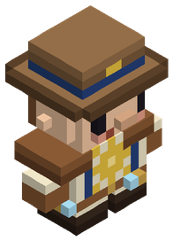 | Escudero explorador | Facción | Defensivo | 3 | 64 | 7 | ||
 | Esfinge de los Espejismos | Único | Hostil | 175 | 167,6 | 7,77 | Oasis Místico | |
 | Espectro Devorador Astral | Fauna | Hostil | 1 | 51 | 9,7 | Bosque Celestial | |
 | Espectro de Fuego Fatuo | Fauna | Defensivo | 1 | 15 | 6 | Pantano, Pradera Floral, Arboleda de Otoño | |
 | Espíritu Enfadado / Banshee | Fauna | Hostil | 1 | 36 | 8,5 | Bosque Umbrío | |
 | Esqueleto Guardián de Cripta | Fauna | Hostil | 1 | 34 | 8,4 | Pradera Floral, Arboleda de Otoño, Taiga de Pinos, Cañón de Arcilla… | |
 | Esqueleto de la horda | Facción | Hostil | 1 | 30 | 5 | ||
 | Excavadora de Vapor Abandonada | Jefe | Hostil | 36 | 105,3 | 7,12 | ||
| Explorador de vanguardia | Facción | Defensivo | 3 | 48 | 9 | |||
 | Faraón Inmortal Akhen'Sun | Jefe | Hostil | 75 | 122,8 | 7,51 | ||
 | Foca | Fauna | Pacífico | 1 | 16 | 2 | Playa | |
 | Fénec | Fauna | Pacífico | 1 | 11 | 2 | Desierto | |
 | Fénix Astral | Fauna | Defensivo | 1 | 133 | 13,9 | Montura | Bosque Celestial |
 | Gacela | Fauna | Pacífico | 1 | 14 | 2 | Sabana | |
 | Garza real | Fauna | Pacífico | 1 | 12 | 2 | Pantano, Río | |
 | Gaviota | Fauna | Pacífico | 1 | 11 | 2 | Playa, Océano, Río | |
 | Geomante kobold | Facción | Hostil | 2 | 24 | 7,7 | ||
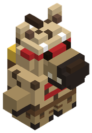 | Gnoll acechador | Facción | Hostil | 3 | 35 | 8,2 | ||
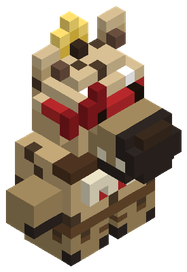 | Gnoll alfa | Facción | Hostil | 4 | 105 | 14,3 | ||
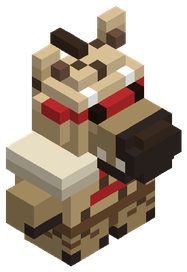 | Gnoll rompehuesos | Facción | Hostil | 3 | 70 | 7,7 | ||
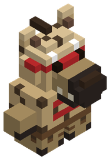 | Gnoll saqueador | Facción | Hostil | 3 | 53 | 9,9 | ||
 | Golem de Arcilla Guardián | Fauna | Hostil | 1 | 143 | 14,3 | Cañón de Arcilla | |
 | Golem de Cristal Resonante | Fauna | Hostil | 1 | 158 | 14,9 | Bosque de Espigas de Cristal | |
 | Golem de Vidrio Refractario | Fauna | Hostil | 1 | 124 | 13,5 | Desierto de Vidrio | |
 | Gorgona del Vitriolo Esmeralda | Único | Hostil | 250 | 209,1 | 7,84 | Ciénaga Tóxica | |
 | Gorila | Fauna | Defensivo | 1 | 59 | 10,3 | Selva | |
 | Gorila Espalda de Hierro | Fauna | Defensivo | 1 | 166 | 15,2 | Montura | Selva |
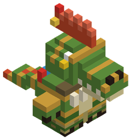 | Gran cresta | Facción | Hostil | 4 | 105 | 13,7 | ||
 | Grifo de las Cumbres | Fauna | Defensivo | 1 | 123 | 13,5 | Montura | Cumbres Nubosas |
 | Guacamayo | Fauna | Pacífico | 1 | 11 | 2 | Selva | |
 | Guardia de la ciudad | Facción | Defensivo | 6 | 90 | 11 | ||
| Guardia del clan | Facción | Defensivo | 10 | 140 | 16 | |||
 | Guardián de Obsidiana | Fauna | Hostil | 1 | 148 | 14,5 | Picos Volcánicos | |
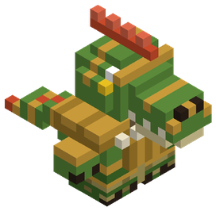 | Guardián de caparazón | Facción | Hostil | 3 | 70 | 7,4 | ||
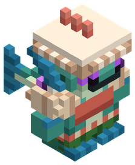 | Guardián de concha | Facción | Hostil | 4 | 70 | 7,4 | ||
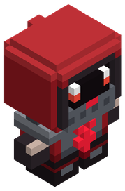 | Guardián de hierro | Facción | Hostil | 6 | 64 | 8,4 | ||
 | Guerrero lagarto | Facción | Hostil | 3 | 53 | 9,5 | ||
 | Gárgola Alada de Piedra | Fauna | Hostil | 1 | 31 | 8,1 | Bosque de Bambú Ancestral, Estepa Ventosa, Selva de Manglares | |
 | Gólem Supervisor de Hematita | Jefe | Hostil | 32 | 86,2 | 7,03 | ||
 | Gólem Titán de Magnetita y Roca | Jefe | Hostil | 85 | 142,5 | 7,56 | ||
 | Gólem de Hematita | Único | Hostil | 40 | 85 | 7,18 | Montaña | |
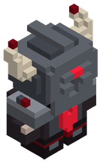 | Heraldo de Malakor | Facción | Hostil | 7 | 95 | 15,6 | ||
 | [JEFE] Hidra Tóxica de Siete Cabezas | Jefe | Hostil | 1 | 1800 | 56 | Ciénaga Tóxica | |
 | Hiena | Fauna | Defensivo | 1 | 19 | 6,7 | Sabana | |
 | Hiena Carroñera de las Sombras | Fauna | Hostil | 1 | 24 | 7,4 | Sabana, Páramo de Ceniza | |
 | Hipogrifo del Bosque | Fauna | Defensivo | 1 | 109 | 12,9 | Montura | Bosque Umbrío |
 | Hipopótamo | Fauna | Defensivo | 1 | 87 | 11,8 | Río, Sabana, Pantano | |
 | Hormiga | Fauna | Pacífico | 1 | 10 | 2 | Llanura, Bosque, Playa, Sabana… | |
 | Horror del Vacío Dimensional | Fauna | Hostil | 1 | 166 | 15,2 | Grieta del Vacío | |
 | Hrimfaxi el Mamut de Hielo Fósil | Jefe | Hostil | 110 | 154,3 | 8 | ||
 | Huargo de Batalla | Fauna | Hostil | 1 | 81 | 11,5 | Montura | Taiga de Pinos, Montaña |
 | Ictiosaurio de los Corales | Fauna | Defensivo | 1 | 45 | 9,3 | Montura | Océano Profundo |
 | Ignis el Dragón de Basalto | Único | Hostil | 190 | 186,1 | 7,79 | Picos Volcánicos | |
 | Imitador de Cofre / Mimic | Fauna | Hostil | 1 | 30 | 8 | Taiga de Pinos, Cañón de Arcilla, Bosque de Bambú Ancestral, Estepa Ventosa… | |
 | Isópodo Acorazado Gigante | Fauna | Pacífico | 1 | 22 | 2 | Fosa Abisal | |
 | Jabalí | Fauna | Defensivo | 1 | 28 | 7,8 | Montura | Bosque, Llanura |
 | Jabalí Colmillos de Bronce | Fauna | Hostil | 1 | 34 | 8,4 | Cañón de Arcilla | |
 | Jaguar | Fauna | Defensivo | 1 | 22 | 7 | Selva | |
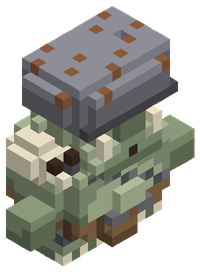 | Jefe ogro | Facción | Hostil | 6 | 228 | 22,1 | ||
 | Jirafa | Fauna | Pacífico | 1 | 125 | 2 | Sabana | |
 | Karkinos el Acorazado | Único | Hostil | 9 | 39,6 | 5,37 | Playa | |
 | Karybdis la Reina del Maelstrom | Jefe | Hostil | 450 | 575,6 | 7,91 | ||
 | Kharra la Gran Sacerdotisa de la Sangre de Hierro | Jefe | Hostil | 320 | 292,2 | 7,87 | ||
 | Khepri el Devorador de Sol | Único | Hostil | 65 | 98 | 7,19 | Desierto | |
 | Kobold dinamitero | Facción | Hostil | 2 | 26 | 6,8 | ||
 | Kobold entibador | Facción | Hostil | 2 | 51 | 6,3 | ||
 | Kobold minero | Facción | Hostil | 2 | 38 | 8,1 | ||
 | Kukulcán el Devorador de Jade | Jefe | Hostil | 95 | 139,4 | 7,61 | ||
 | La Matriarca Gorgona de Coral | Jefe | Hostil | 38 | 107,3 | 7,15 | ||
 | Lagarto de Lava | Fauna | Hostil | 1 | 20 | 6,8 | Picos Volcánicos | |
 | Leona | Fauna | Defensivo | 1 | 34 | 8,4 | Sabana | |
 | Leopardo de las Nubes | Fauna | Hostil | 1 | 18 | 6,5 | Cumbres Nubosas | |
 | Leopardo de las nieves | Fauna | Defensivo | 1 | 15 | 6 | Montaña, Tierras nevadas | |
 | Leviatán Acorazado Juvenil | Fauna | Hostil | 1 | 240 | 17,6 | Montura | Fosa Abisal |
 | León | Fauna | Defensivo | 1 | 36 | 8,6 | Sabana | |
 | Libélula | Fauna | Pacífico | 1 | 11 | 2 | Pantano, Río | |
 | Liebre | Fauna | Pacífico | 1 | 11 | 2 | Mascota | Llanura, Sabana, Tierras nevadas |
 | Lince | Fauna | Defensivo | 1 | 13 | 5,6 | Bosque, Tierras nevadas, Montaña | |
 | Lobo | Fauna | Defensivo | 1 | 19 | 6,7 | Mascota | Bosque, Tierras nevadas, Montaña |
 | Luciérnaga | Fauna | Pacífico | 1 | 10 | 2 | Pantano, Bosque, Llanura, Río… | |
 | Lupus Umbralis | Único | Hostil | 12 | 38,6 | 5,53 | Arboleda de Otoño | |
 | [JEFE] Lusca, el Tiburón-Pulpo de las Fosas | Jefe | Hostil | 1 | 1800 | 56 | Fosa Abisal | |
 | Malakor el Señor de Sangre de Hierro | Único | Hostil | 375 | 291,1 | 7,89 | Páramo de la Corrupción | |
 | Mamut Lanudo Patriarca | Fauna | Defensivo | 1 | 300 | 26,4 | Yermo Helado Estigio | |
 | Mamut lanudo | Fauna | Defensivo | 1 | 300 | 23,7 | Montura | Tierras nevadas |
 | Manta Raya Gigante | Fauna | Pacífico | 1 | 172 | 2 | Montura | Océano |
 | Manticora del Peñasco | Único | Hostil | 28 | 55,4 | 6,94 | Sabana | |
 | Mantícora Carmesí | Fauna | Hostil | 1 | 133 | 13,9 | Montura | Picos Volcánicos |
 | Mariposa | Fauna | Pacífico | 1 | 10 | 2 | Llanura, Bosque, Pantano, Selva | |
 | Mariquita | Fauna | Pacífico | 1 | 10 | 2 | Llanura, Bosque | |
 | Marmota | Fauna | Pacífico | 1 | 11 | 2 | Montaña | |
 | Medusa Bioluminiscente | Fauna | Hostil | 1 | 42 | 9,1 | Océano Profundo | |
 | Momia Faraónica Ancestral | Fauna | Hostil | 1 | 34 | 8,4 | Desierto | |
 | Mono capuchino | Fauna | Pacífico | 1 | 11 | 2 | Selva | |
 | Morena Gigante de Grieta | Fauna | Hostil | 1 | 13 | 5,5 | Océano Profundo | |
 | Morrigan la Castellana de la Bastilla | Jefe | Hostil | 210 | 197,5 | 7,81 | ||
 | Murciélago | Fauna | Pacífico | 1 | 10 | 2 | Bosque, Pantano, Montaña, Selva… | |
 | Murciélago Vampiro Gigante | Fauna | Hostil | 1 | 14 | 5,9 | Pantano | |
 | Mycelion el Devorador de Mentes | Único | Hostil | 135 | 128 | 7,71 | Bosque de Hongos Gigantes | |
 | Nautilo de Concha Espiral | Fauna | Defensivo | 1 | 22 | 7 | Océano Profundo | |
 | Nautiloth el Amonites Colosal | Único | Hostil | 95 | 124,7 | 7,61 | Océano Profundo | |
 | Nigromante de Túnica Rota | Fauna | Hostil | 1 | 36 | 8,5 | Bosque de Bambú Ancestral, Estepa Ventosa, Selva de Manglares | |
 | Nigromante de hueso | Facción | Hostil | 1 | 22 | 6 | ||
 | Nihil el Engendro del Vórtice | Único | Hostil | 460 | 480,5 | 7,91 | Grieta del Vacío | |
 | Nimbaroth el Coloso de Aerolita | Único | Hostil | 210 | 183,4 | 7,81 | Cumbres Nubosas | |
 | Nox el Señor del Ocaso | Único | Hostil | 150 | 145,1 | 7,74 | Bosque Umbrío | |
 | Nutria Gigante de Río | Fauna | Defensivo | 1 | 14 | 5,9 | Río | |
| Ogro lanzarrocas | Facción | Hostil | 5 | 77 | 12,8 | |||
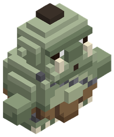 | Ogro machacador | Facción | Hostil | 5 | 115 | 15,3 | ||
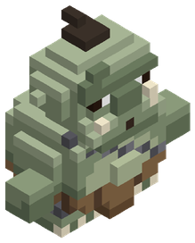 | Ogro muralla | Facción | Hostil | 5 | 154 | 11,9 | ||
 | Ojo Flotante Vigía | Fauna | Hostil | 1 | 54 | 9,9 | Ciénaga Tóxica, Páramo de Ceniza, Selva Primordial, Yermo Helado Estigio… | |
 | Ondina del Naufragio | Único | Hostil | 25 | 51,4 | 6,85 | Océano | |
 | Oráculo de Amatista Resonante | Único | Hostil | 295 | 244,7 | 7,86 | Bosque de Espigas de Cristal | |
 | Oso | Fauna | Defensivo | 1 | 64 | 10,6 | Bosque, Montaña, Tierras nevadas | |
 | Oso Acorazado Polar | Fauna | Defensivo | 1 | 153 | 14,7 | Montura | Glaciares de Hielo Azul |
 | Ouroboros el Devorador del Manto | Jefe | Hostil | 450 | 541,7 | 7,91 | ||
 | Oveja | Fauna | Pacífico | 1 | 34 | 2 | Llanura, Montaña | |
 | Panda Guardián de Piedra | Fauna | Defensivo | 1 | 67 | 10,8 | Bosque de Bambú Ancestral | |
 | Panda gigante | Fauna | Pacífico | 1 | 39 | 2 | Bosque | |
 | Pangolín de Escamas de Cristal | Fauna | Defensivo | 1 | 25 | 7,4 | Bosque de Espigas de Cristal | |
 | Pelícano | Fauna | Pacífico | 1 | 13 | 2 | Playa, Océano | |
 | Perezoso Gigante Megaterio | Fauna | Defensivo | 1 | 300 | 20,6 | Selva Primordial | |
 | Pez Espada Plateado | Fauna | Defensivo | 1 | 20 | 6,8 | Océano Profundo | |
 | Pez Globo Espinoso Gigante | Fauna | Defensivo | 1 | 45 | 9,3 | Océano | |
 | Pez Linterna del Abismo | Fauna | Hostil | 1 | 30 | 8 | Fosa Abisal | |
 | Pez Sierra de los Manglares | Fauna | Defensivo | 1 | 20 | 6,8 | Selva de Manglares | |
 | Pingüino emperador | Fauna | Pacífico | 1 | 16 | 2 | Tierras nevadas, Playa | |
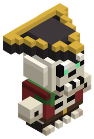 | Pirata esquelético | Facción | Hostil | 4 | 43 | 9,9 | ||
 | Plesiosaurio Ancestral | Fauna | Defensivo | 1 | 101 | 12,5 | Montura | Selva de Manglares |
 | Poseidón de Oricalco (El Coloso Sumergido) | Jefe | Hostil | 420 | 452,6 | 7,9 | ||
 | Pájaro Roc Gigante | Fauna | Hostil | 1 | 300 | 24,8 | Montura | Cumbres de la Tormenta Eterna |
 | Pájaro carpintero | Fauna | Pacífico | 1 | 10 | 2 | Bosque | |
 | Quelonia del Fango | Único | Hostil | 7 | 32,1 | 4,32 | Río | |
 | Quimera Marina Fantasma | Fauna | Defensivo | 1 | 30 | 8 | Fosa Abisal | |
 | Raijin el Tamborilero de la Tormenta | Único | Hostil | 430 | 389,3 | 7,9 | Cumbres de la Tormenta Eterna | |
 | Rana | Fauna | Pacífico | 1 | 12 | 2 | Mascota | Pantano, Río, Selva |
 | Reno | Fauna | Pacífico | 1 | 29 | 2 | Montura | Tierras nevadas |
 | Rex Dracónico Primordial | Único | Hostil | 310 | 252,7 | 7,87 | Selva Primordial | |
 | Rey Tritón el Tirano de las Mareas | Jefe | Hostil | 88 | 153,9 | 7,58 | ||
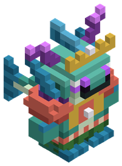 | Rey tritón corrupto | Facción | Hostil | 5 | 105 | 13,7 | ||
 | Rinoceronte | Fauna | Defensivo | 1 | 91 | 12 | Sabana | |
 | Rinoceronte Colosal | Fauna | Defensivo | 1 | 186 | 15,9 | Montura | Sabana, Cañón de Arcilla |
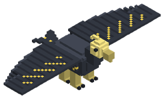 | Roc, el Águila de las Tormentas | Jefe | Hostil | 195 | 220 | 11 | ||
 | Ronin Sombrío Jin | Único | Hostil | 70 | 80,5 | 7,48 | Bosque de Bambú Ancestral | |
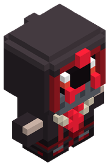 | Sacerdote de sangre | Facción | Hostil | 6 | 30 | 10,2 | ||
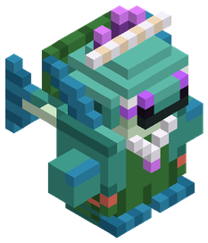 | Sacerdotisa de la marea | Facción | Hostil | 4 | 33 | 8,9 | ||
 | Salamandra Gigante de Cueva | Fauna | Pacífico | 1 | 14 | 2 | Río, Taiga de Pinos, Cañón de Arcilla | |
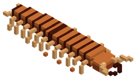 | Scolopendra del Abismo Arenoso | Jefe | Hostil | 275 | 260 | 12 | ||
 | Sepia Camaleónica | Fauna | Defensivo | 1 | 12 | 5,3 | Océano | |
 | Serafín del Firmamento | Único | Hostil | 410 | 352,2 | 7,9 | Bosque Celestial | |
 | Serpiente Cascabel de Fuego | Fauna | Hostil | 1 | 33 | 8,3 | Desierto | |
 | Señor de la Cripta Esquelético | Fauna | Hostil | 1 | 128 | 13,7 | Bosque de Hongos Gigantes, Glaciares de Hielo Azul, Picos Volcánicos, Bosque Umbrío… | |
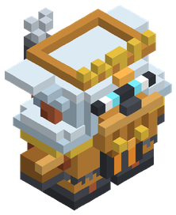 | Señor de la forja | Facción | Hostil | 5 | 142 | 14,3 | ||
 | Silvano Sombrío | Único | Hostil | 10 | 43,6 | 6,05 | Bosque | |
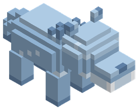 | Skoll, el Lobo de Escarcha Ancestral | Jefe | Hostil | 115 | 190 | 10 | ||
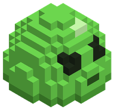 | Slime | Fauna | Defensivo | 1 | 19 | 6,7 | Mascota | |
 | Sol'Zul el Espejo Ígneo | Único | Hostil | 420 | 380,2 | 7,9 | Desierto de Vidrio | |
 | Sombra Viviente | Fauna | Hostil | 1 | 38 | 8,7 | Páramo de la Corrupción | |
 | Suricata | Fauna | Pacífico | 1 | 11 | 2 | Sabana, Desierto | |
 | Surtr el Forjador del Núcleo | Único | Hostil | 440 | 415,3 | 7,91 | Núcleo Ígneo | |
 | Tapir de Agua Acorazado | Fauna | Pacífico | 1 | 32 | 2 | Selva de Manglares | |
 | Tejón | Fauna | Defensivo | 1 | 12 | 5,2 | Bosque, Llanura | |
 | Tezcatl el Jaguar de Obsidiana | Único | Hostil | 75 | 101,2 | 7,23 | Selva | |
 | Thor'Kael el Soberano del Relámpago | Jefe | Hostil | 460 | 513,7 | 7,91 | ||
 | Tiburón Blanco Costero | Fauna | Hostil | 1 | 69 | 10,9 | Océano Profundo | |
 | Tiburón Martillo de Arrecife | Fauna | Hostil | 1 | 20 | 6,9 | Océano | |
 | Tigre | Fauna | Defensivo | 1 | 32 | 8,2 | Selva | |
 | Tigre Dientes de Sable | Fauna | Hostil | 1 | 95 | 12,3 | Montura | Selva Primordial |
 | Tirador fantasma | Facción | Hostil | 4 | 29 | 8,2 | ||
 | [JEFE] Titán de Hueso Primigenio | Jefe | Hostil | 1 | 1800 | 56 | Valle de los Titanes | |
 | Titán de Magma y Basalto | Fauna | Hostil | 1 | 300 | 28 | Núcleo Ígneo | |
 | Tortuga | Fauna | Pacífico | 1 | 15 | 2 | Montura | Sabana, Selva, Playa |
 | Tortuga Mordedora Prehistórica | Fauna | Hostil | 1 | 37 | 8,7 | Pantano | |
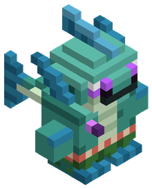 | Tritón corrupto | Facción | Hostil | 4 | 53 | 9,5 | ||
 | Tucán | Fauna | Pacífico | 1 | 11 | 2 | Selva | |
 | Typhon el Coloso de Sulfurita | Único | Hostil | 280 | 235,8 | 7,86 | Páramo de Ceniza | |
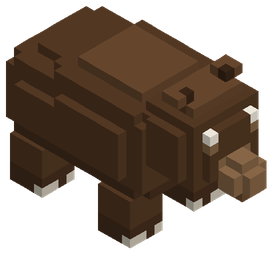 | Ursa Major, el Oso Ancestral del Robledal | Jefe | Hostil | 45 | 150 | 9 | ||
 | Ursoblasto | Único | Hostil | 35 | 63,8 | 6,45 | Taiga de Pinos, Tierras nevadas | |
 | Vaca | Fauna | Pacífico | 1 | 46 | 2 | Llanura | |
 | Varano | Fauna | Pacífico | 1 | 13 | 2 | Desierto, Selva, Sabana | |
 | Verdugo de las Cadenas | Fauna | Hostil | 1 | 158 | 14,9 | Bosque de Hongos Gigantes, Glaciares de Hielo Azul, Picos Volcánicos, Bosque Umbrío… | |
 | Vespis Regia | Único | Hostil | 11 | 38,2 | 6,13 | Pradera Floral | |
 | Vidente gnoll | Facción | Hostil | 3 | 33 | 9,4 | ||
 | Vorgrath el Dracolich de Adamantio | Jefe | Hostil | 320 | 259,2 | 7,87 | ||
 | Vritra la Sierpe de Gravitón | Único | Hostil | 450 | 457,1 | 7,91 | Archipiélago Flotante | |
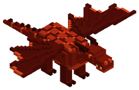 | Vulkanor, el Dragón de Fuego Primigenio | Jefe | Hostil | 465 | 320 | 14 | ||
 | Wendigo de las Ventiscas | Único | Hostil | 80 | 105,9 | 7,54 | Tierras nevadas | |
 | Yak | Fauna | Defensivo | 1 | 67 | 10,8 | Montaña, Tierras nevadas | |
 | Yeti de las Ventiscas | Fauna | Hostil | 1 | 158 | 14,9 | Glaciares de Hielo Azul | |
 | Ymir el Jötunn de Escarcha | Único | Hostil | 160 | 168,5 | 7,76 | Glaciares de Hielo Azul | |
 | Zephyros el Titán de las Alturas | Jefe | Hostil | 430 | 424,7 | 7,9 | ||
 | Ziz de los Vendavales | Único | Hostil | 60 | 98,3 | 7,41 | Estepa Ventosa | |
 | Zombi de la Peste | Fauna | Hostil | 1 | 33 | 8,3 | Pantano, Taiga de Pinos, Cañón de Arcilla | |
 | Zorro | Fauna | Pacífico | 1 | 15 | 2 | Bosque, Llanura, Tierras nevadas | |
 | Zorro Sombrío | Fauna | Defensivo | 1 | 18 | 6,6 | Bosque Umbrío | |
 | Águila real | Fauna | Pacífico | 1 | 12 | 2 | Montaña, Tierras nevadas |